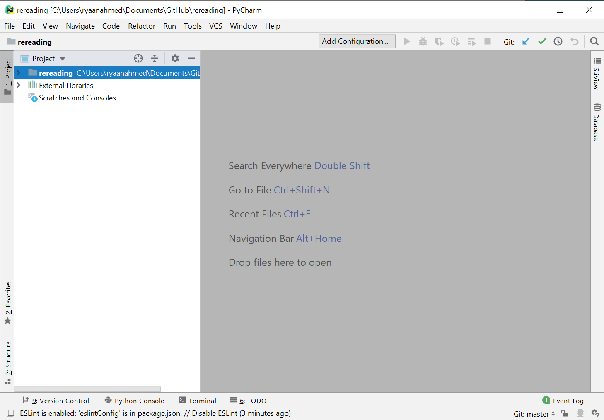
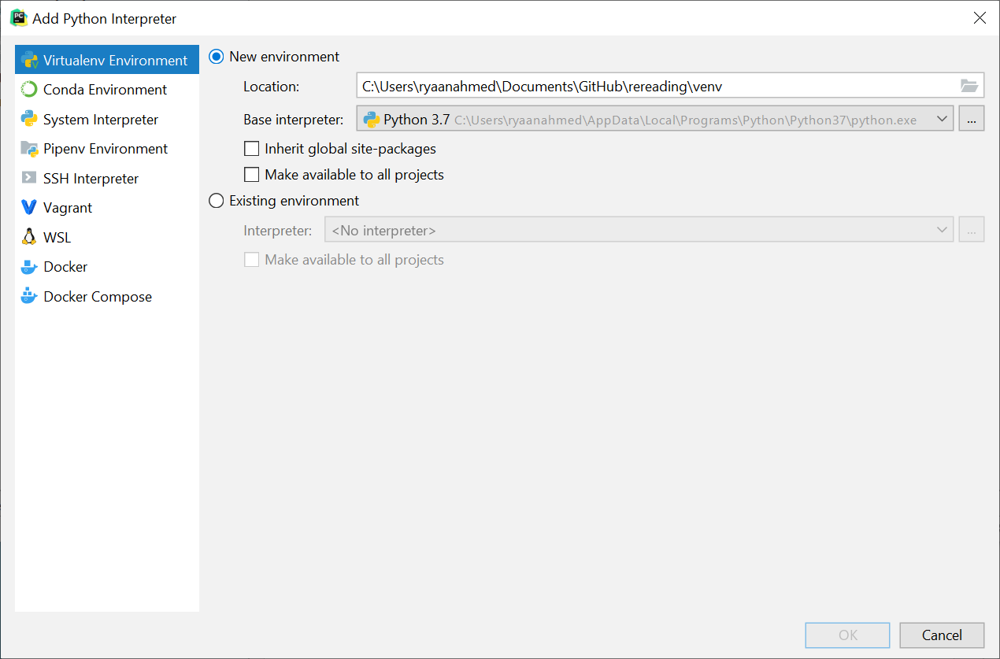
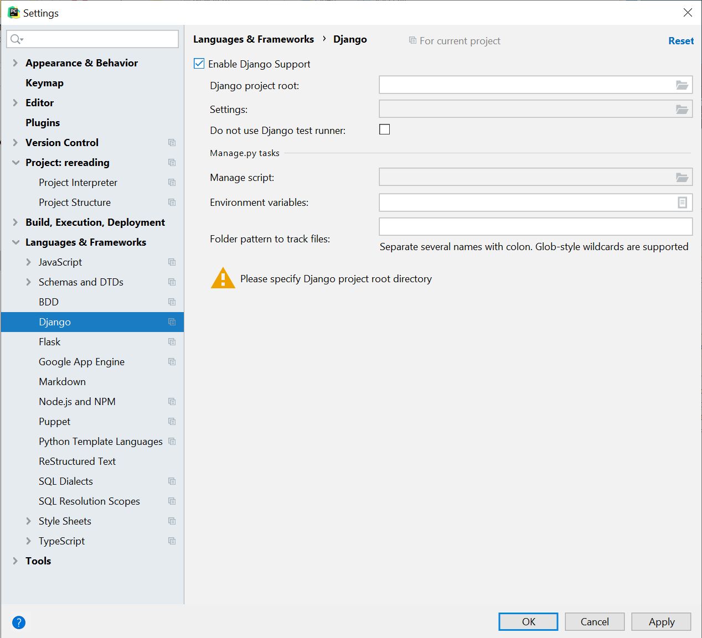
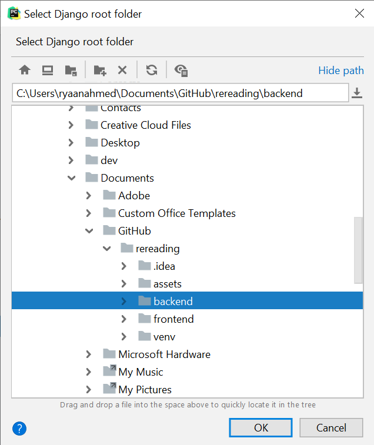
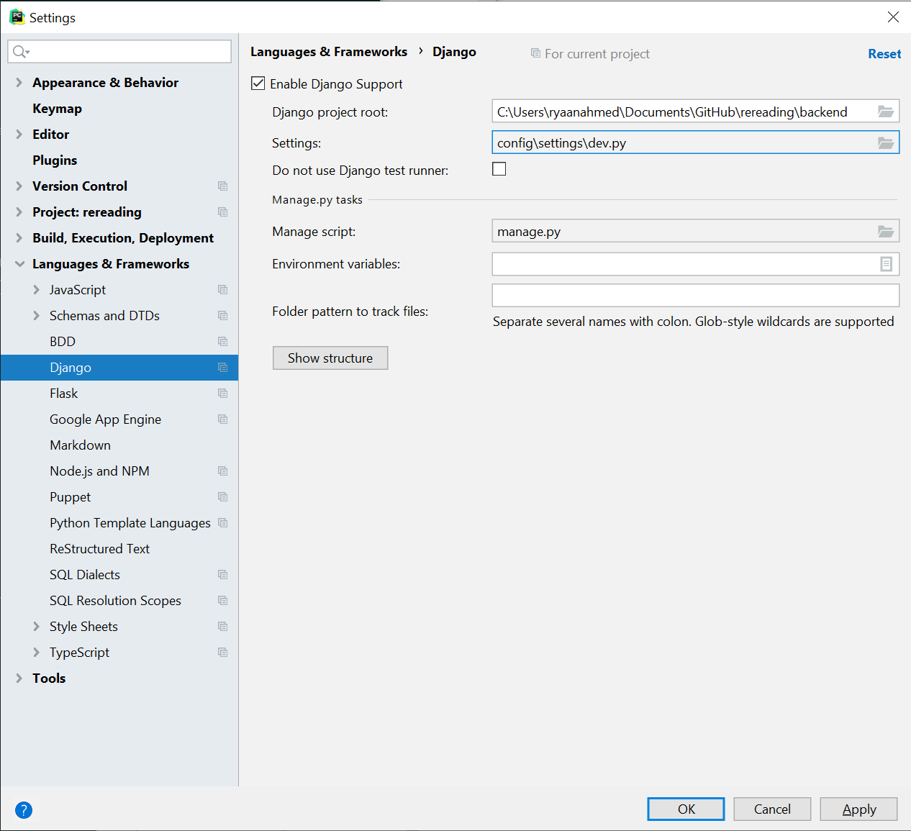
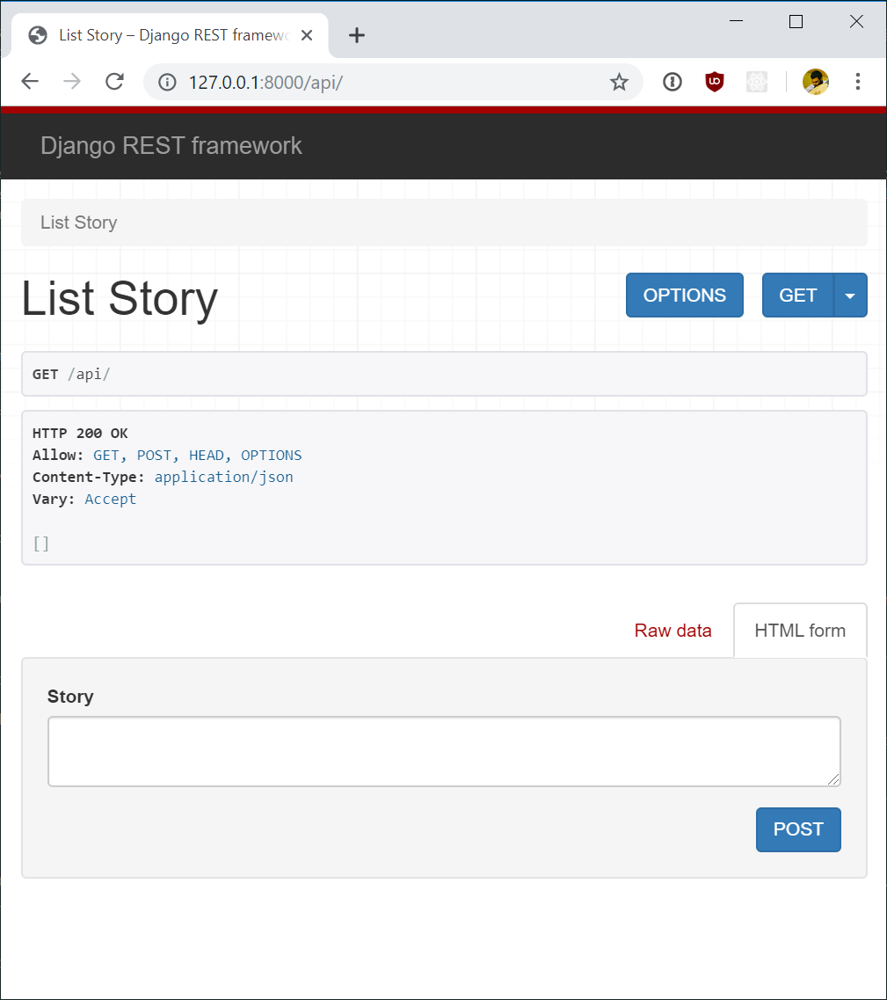
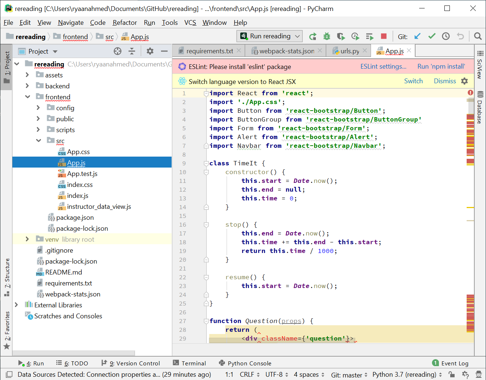
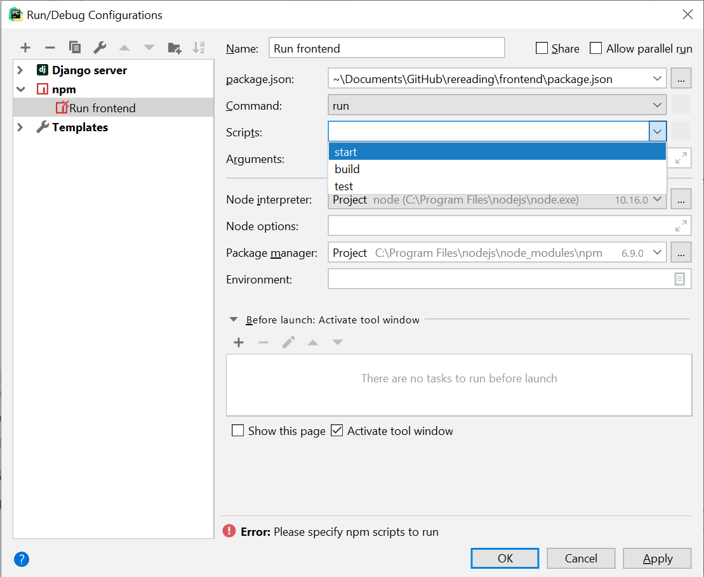
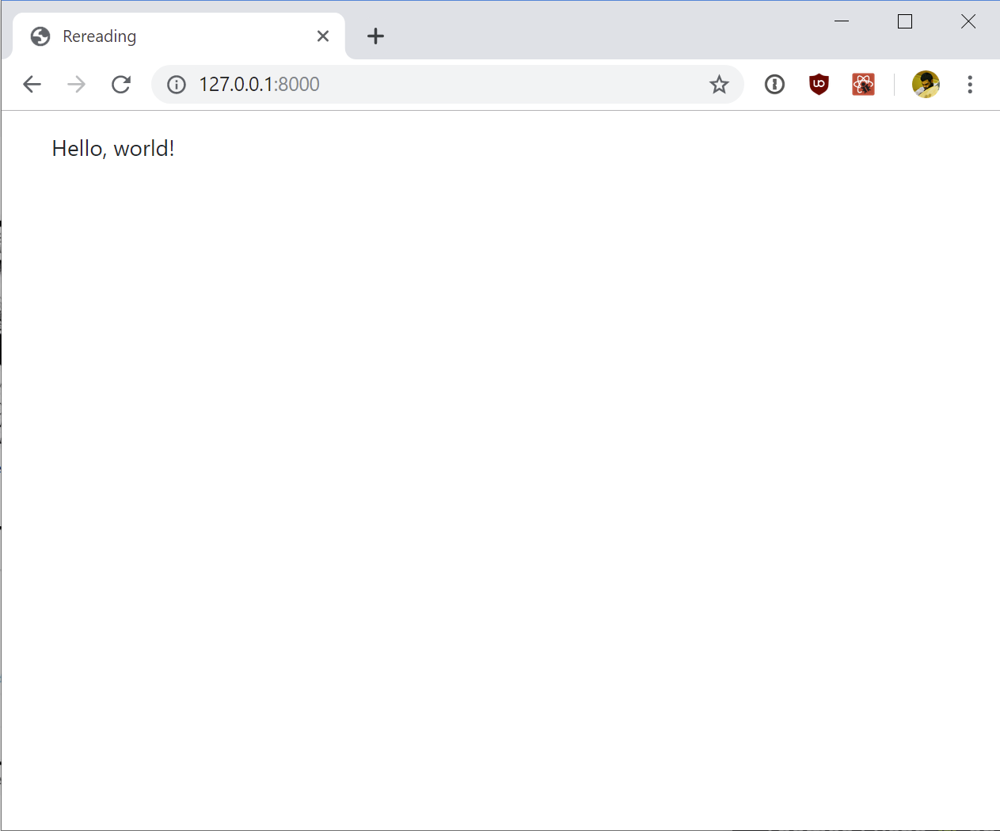
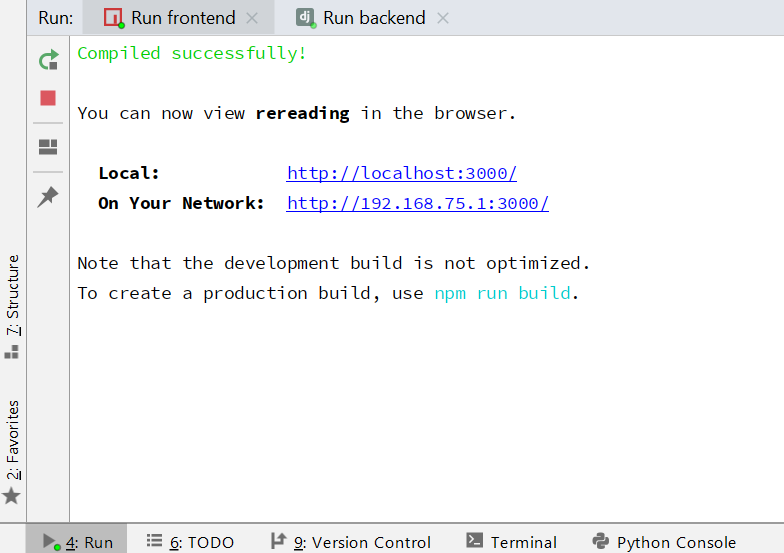

Setting up Rereading
At this point, you have all of the tools necessary to work on our project installed -- Git, Atom, Python, Node/npm, and PyCharm -- so let's put it all together and get the project running.
Cloning the Repository
Open GitHub Desktop. If this is your first time using the application and you've already been added to the dhmit organization, dhmit projects should appear in the left hand pane. Click on dhmit/rereading, and click Clone dhmit/rereading.
If this option doesn't appear, click Clone a repository from the Internet... or go to File -> Clone repository. In the URL tab, enter https://github.com/dhmit/rereading.git.
Leave the Local path field as is, but take note of it, as you'll need it later. Click Clone to download the repo.
Once the repo is cloned, you should see a screen that looks like this. Try clicking Show in Explorer to see where the project has ended up on your computer, or click View on GitHub to go to our project page on GitHub.
Setting up our project in PyCharm
Open the project
Open PyCharm, select "Open", and open the folder where you cloned the repo in the step above. By default on Windows this is C:\Users\YOUR_USER_NAME\Documents\GitHub\rereading and on macOS /Users/YOUR_USER_NAME/Documents/GitHub/rereading.
Once it's loaded, you should see the rereading folder appear in the Project pane on the left.

Setup Python environment and packages
Open the settings window (macOS PyCharm -> Preferences; Windows, File -> Settings), and go to "Project: rereading" -> Project Interpreter. Click on the wheel in the top right and select "Add".
Select "New Environment". Make sure that the base interpreter is the path that you noted when installing Python. Leave the location for the interpreter as the default provided by PyCharm.

Apply your changes, wait for the virtual environment to be created, and exit the settings window.
Click Terminal in the bottom status bar. You should see (venv) at the beginning of your prompt. If you do not, restart PyCharm and check again. If you still don't see (venv) appear, go back to the beginning of this section and make sure you correctly setup a new environment.
In the Project panel, find and open the requirements.txt file in the top-level rereading folder. Wait until PyCharm automatically detects that this file contains our Python package requirements. Click Install requirements in the banner that pops up, and click Install once the Choose Packages to Install window pops up. (If it asks you to install a plugin as shown in the top banner here, you can safely click Ignore extension. You should see the installation process begin in the bottom status bar. We can let this run while moving on to the next step, but we'll come back to this to make sure it worked.

Setting up a Django run configuration
Our project uses Django, a Python web framework. If we let PyCharm know about Django, we get lots of nice debugging features.
Go back to the settings window. Under Languages & Frameworks -> Django check Enable Django Support

Set the Django project root to be the backend folder within our project.

Set the Settings file to be config/settings/dev.py.
If the Django pane now looks something like this, you can click OK to apply and exit the settings.

Click the big Add Configuration button in the top bar. In the Run/Debug Configurations window that appears, click the + in the top left corner, and select Django server
Name this configuration Run backend and click OK with all of the defaults in place. At this point in the process, you've installed all the third-party packages we need to run our project and made PyCharm aware of how to run our Django server. Let's check that everything worked.
Go back to the terminal inside Django, and execute pip freeze. This should output a list that's exactly the same as the contents of the requirements.txt file you opened earlier. Type cd backend to enter the backend folder, and then run python manage.py migrate. This will setup a local development database on your machine.
Click the green triangular play button in the top right corner of PyCharm to run the server. If everything is working, you should see some output like this in the run panel.
Click on the link where the site is being run locally http://127.0.0.1:8000, where you should see... well... an error message. This is because we are not yet running the frontend development server. If you're seeing this error, that means that everything is working so far!
Navigate to http://127.0.0.1:8000/api/, and you should see a Django REST framework debug page, which looks like this. If this is all working, we're nearly there! If not, try running the above steps again, and if all else fails, find a staff member or a returning lab member who can help you troubleshoot.

Setting up npm
Now that the Python/Django backend part of the site is up and running on your machine, the last step is to setup the JavaScript/React frontend.
In the project pane, find and open frontend/src/App.js. Once you open this file, wait a moment, and PyCharm should throw about a million errors. PyCharm should also detect that it's missing two configurations, both of which are shown here in the banners that appear. Click Run 'npm install to install all of the JavaScript dependencies for our project. This is going to take a little while.
Once that's done, click Switch to switch the language version to React JSX. Give that a little while to run, as well (you'll see a progress bar in the bottom status bar). Once it's done, the errors should vanish.

Now, go back to what used to be the Add Configurations button but now says Run backend. Click Edit configurations to go back to the Run/Debug Configurations window. Click the same + in the top left corner, and then select npm. Name this configuration Run frontend
In the package.json field, click the dropdown menu down arrow, and select frontend/package.json. This is the file that tells PyCharm and npm how our frontend application is configured.
In the scripts field, select start from the dropdown menu.

Click OK and exit the settings. Once again, click the green triangle 'Run' button next to Run frontend which will start the frontend development server. Once you see a success message in the run panel, go back to http://127.0.0.1:8000, where you should now see a 'Hello, world!' message instead of an error message.

Congratulations! You've got the project up and running on your machine.
Closing and restarting the project
Close PyCharm, terminate any processes when it asks, and then restart PyCharm. In order to run the project, you have to go to this dropdown menu, click Run backend and then the triangular 'Run' button next to it, and then click Run frontend and do the same.
Once you see both Run backend and Run frontend tabs open in the Run panel, and both show success messages, you can go back to the site running locally on your machine. Please note that the frontend pane will show a url ending in :3000. This is another way to access the frontend directly without running the Django server, but for this project, we'll be ignoring that entirely.
